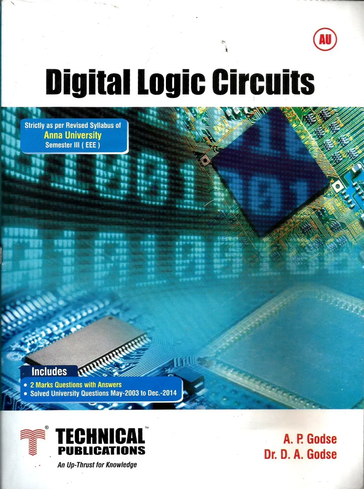
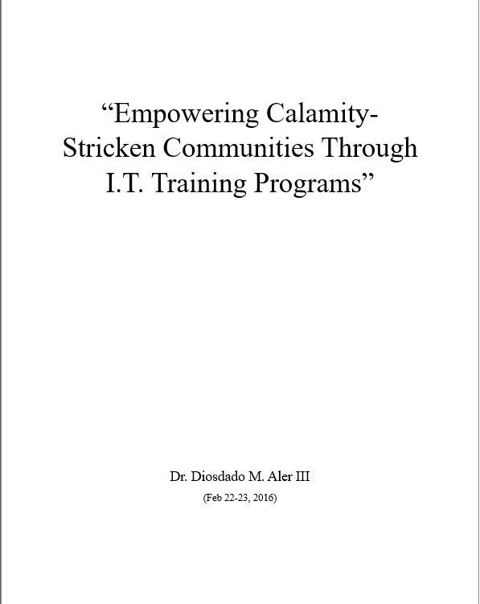
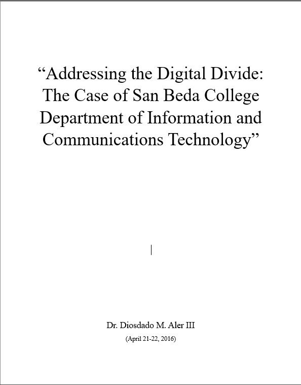

Books Authored:
- Modules in Electronic Spreadsheet (Using MS-Excel 2007 (Sep 6, 2012)
- Word Processing(Using MS-Word 2007)(2012)

- Basic Computer Concepts (2012)

- Modules in Research Project (Aug 17, 2012)

- Modules in Presentation and Database Software (Using MS-PowerPoint 2007 and MS-Access 2007) (Sep 6, 2012)

- Modules in Fundamentals of Programming with Database Theory and Applications(Using C++) (Nov 29, 2012)

- Modules in Digital Logic Circuits (Nov 29, 2012)

- Modules in Code of Ethics for I.C.T. Professionals (Dec 2, 2014)
Researches:
- "Empowering Calamity-Stricken Communities Through I.T. Training Programs (Feb 22-23, 2016)"

- "Addressing the Digital Divide : The Case of San Beda College Department of Information and Communications Technology (Apr 21-22, 2016)" (Apr 21-22, 2016)
